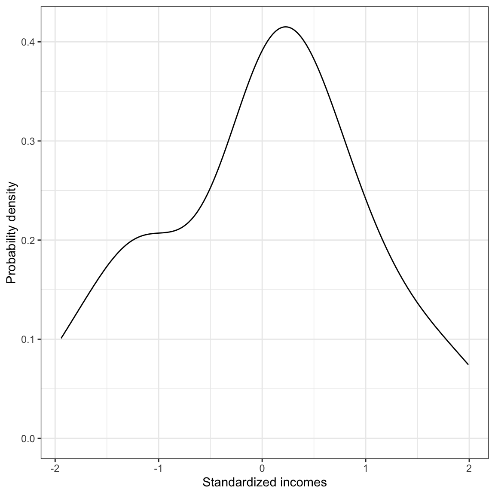
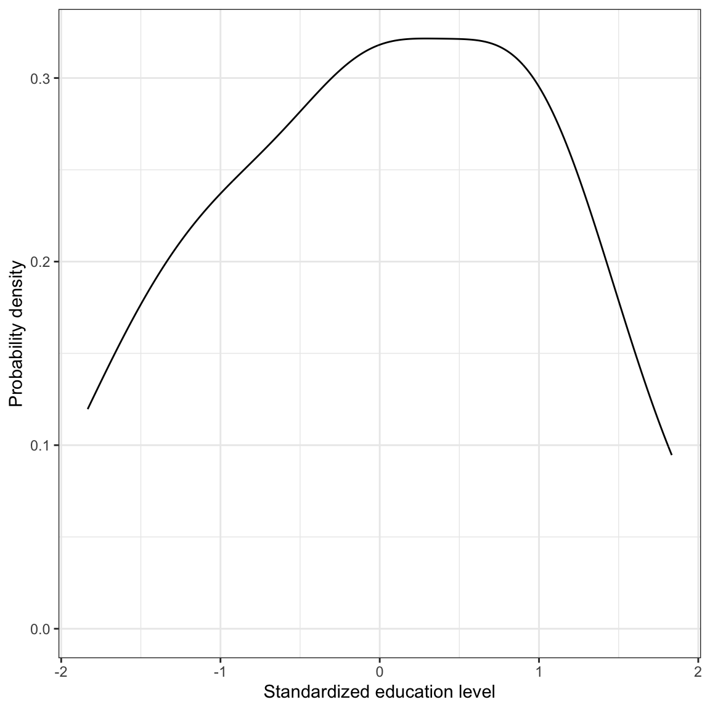

In this chapter, you will learn about standardized regression. You will also learn how the regression coefficients from a simple regression can be computed from other summary measures. This will help you see how these measures impact the regression coefficients. We will use the riverview.csv data to examine whether education level is related to income (see the data codebook). To begin, we will load several libraries and import the data into an object called city. We will also fit a model by regressing income on education level and storing those results in an object called lm.a.
Recall also that we had previously computed summary measures for the outcome and predictor variables, as well as the correlation between them.
Table 10.1: Correlation between income and education level for the Riverview employees. The mean and standard deviations for each attribute is displayed on the main diagonal.
Measure
1.
2.
1. Income
53.74 (14.55)
—
2. Education level
.795
16.00 (4.36)
10.1 Correlation’s Relationship to Regression
The correlation coefficient and the slope of the regression line are directly related to one another. Mathematically, the estimated slope of the simple regression line can be computed as:
\[
\hat\beta_1 = r_{xy} \times \frac{s_y}{s_x}
\]
where, \(s_x\) and \(s_y\) are the standard deviations for the variables x (predictor) and y (outcome), respectively, and \(r_{xy}\) is the correlation between x and y. If we are carrying out a regression analysis, there must be variation in both x and y, which implies that both \(s_x\) and \(s_y\) are greater than 0. This in turn implies that the ratio of the standard deviations (the second term on the right-hand side of the equation) is also a positive number. This means the sign of the slope is completely dependent on the sign of the correlation coefficient. If \(r_{xy}>0\) then \(\hat\beta_1>0\). If \(r_{xy}<0\) then \(\hat\beta_1<0\).
The magnitude of the regression slope (sometimes referred to as the effect of x on y) is impacted by three factors: (1) the magnitude of the correlation between x and y; (2) the amount of variation in y; and (3) the amount of variation in x. In general, there is a larger effect of x on y when:
There is a stronger relationship (higher correlation; positive or negative) between x and y;
There is more variation in the outcome; or
There is less variation in the predictor.
10.1.1 Checking the Formula on Our Data
Let’s use the summary measures from the Riverview data to confirm the formula for the slope.
\[
\begin{split}
\hat\beta_1 &= r_{xy} \times \frac{s_y}{s_x} \\[2ex]
&= 0.795 \times \frac{14.55}{4.36} \\[2ex]
&= 2.65
\end{split}
\] This is the same value for the slope that we got from the lm() output.
10.2 Standardized Regression
In standardized regression, the correlation plays a more obvious role. Standardized regression is simply regression performed on the standardized variables (z-scores) rather than on the unstandardized variables. To carry out a standardized regression:
Standardize the outcome and predictor(s) by turning all the observations into z-scores
Fit a model by regressing \(z_y\) on \(z_x\)
Here we will perform a standardized regression on the Riverview data.
10.2.1 Step 1: Standardizing the Variables
Remember that a z-score is computed as:
\[
z_x = \frac{x - \bar{x}}{s_x}
\]
That is we subtract the mean from our observation and then divide by the standard deviation. When we standardize a variable, we are going to turn each of the original observations into a z-score.
A standardized variable will always have a mean of 0 and a standard deviation of 1. Subtracting the mean from each observation (this process is called mean centering) we are making the mean of the newly transformed observations 0 — we re-centered the distribution so. Then, by dividing by the standard deviation (called scaling) we are changing the SD of the transformed observations to be 1. Anytime you add/subtract a value from each observation in a variable, you will shift the mean of that distribution. Anytime you multiply/divide each observation in a variable by some number, you change the SD.
# Standardize the outcome and predictorcity = city |>mutate(z_income = (income -mean(income)) /sd(income),z_education = (education -mean(education)) /sd(education), )# View updated datahead(city)
# Marginal distribution of the standardized incomesggplot(data = city, aes(x = z_income)) +stat_density(geom ="line") +theme_bw() +xlab("Standardized incomes") +ylab("Probability density")# Marginal distribution of the standardized education levelsggplot(data = city, aes(x = z_education)) +stat_density(geom ="line") +theme_bw() +xlab("Standardized education level") +ylab("Probability density")

Density plot of the standardized employee incomes and standardized education levels.

Density plot of the standardized employee incomes and standardized education levels.
Note that the shapes of the distributions for the standardized variables are identical to the shapes of the distributions of the unstandardized variables. Unless the distribution of a variable is normal to begin with, computing z-scores DOES NOT make the standardized distribution normal. The means for both standardized variables are 0 (because of rounding in the computation they are not exactly 0, but quite close) and the standard deviations are both 1. We can also compute the correlation between the standardized variables:
The correlation (\(r=0.795\)) between the standardized variables is exactly the same as the correlation between the unstandardized variables. Centering and scaling does not impact the relationship between variables! That means in regression analysis, it is irrelevant whether we perform the analysis on the unstandardized variables or whether we center or scale those variables. The choice of centering and scaling has more to do with making the interpretation of the results more relevant.
10.2.2 Step 2: Fit a Regression Model Using the Standardized Variables
Now that we have standardized the variables being used in the regression, we can fit a model by regressing \(z_y\) (the standardized outcome) on \(z_x\) (the standardized predictor).
# Fit standardized regressionlm.z =lm(z_income ~1+ z_education, data = city)lm.z
The intercept in a standardized regression is always 0.1 Notice that the slope of the standardized regression is the correlation between the predictor and outcome.
10.2.3 Your Turn
Use the formula for the slope to understand why the slope from a standardized regression will always be equal to the value of the correlation coefficient.
If we interpret these coefficients:
The predicted mean standardized income for all employees who have a standardized education level of 0 is 0.
Each one-unit difference in the standardized education level is associated with a 0.795-unit difference in standardized income, on average.
Remember that standardized variables have a mean equal to 0 and a standard deviation equal to 1. Using that, these interpretations can be revised to:
The mean income for all employees who have the mean level of education is predicted to be the mean income.
Each one-standard deviation difference in education level is associated with a 0.795-standard deviation difference in income, on average.
Here is a scatterplot of the standardized variables along with the fitted standardized regression line. This will help you visually see the results of the standardized regression analysis.
Plot of the standardized income versus the standardized education level for the Riverview employees. The mean values are also displayed (dashed lines) along with the fitted regression line (solid line).
Using standardized regression results allows us to talk about the effect of x on y in a standard metric (standard deviation difference). This can be quite helpful when the unstandardized metric is less meaningful. This is also why some researchers refer to correlation as an effect, even though the value of \(R^2\) is more useful in summarizing the usefulness of the model. Standardized regression also makes the intercept interpretable, since the mean value of x is not extrapolated.
The choice to standardize, center, or scale the outcome or predictors only impacts the interpretations of the intercept and slope, it does not change the underlying relationships between the variables in the model. When it is helpful to have these different interpretations, then transfom the variables. Otherwise, don’t worry about it.
10.2.4 A Slick Property of the Regression Line
Notice from the previous scatterplot of the standardized regression results that the standardized regression line goes through the point \((0,0)\). Since the variables are standardized, this is the point \((\bar{x}, \bar{y})\). The regression line will always go through the point \((\bar{x}, \bar{y})\) even if the variables are unstandardized. This is an important property of the regression line.
We can show this property mathematically by predicting \(y\) when \(x\) is at its mean. The predicted value when \(x=\bar{x}\) is then
This implies that \((\bar{x}, \bar{y})\) is always on the regression line and that the predicted value of y for x-values at the mean is always the mean of y.
10.2.5 Variance Accounted For in a Standardized Regression
The \(R^2\) value for the standardized and unstandardized regression models are identical. That is because the correlation between x and y and that between \(z_x\) and \(z_y\) are identical (see below). Thus the squared correlation will also be the same, in this case \(R^2 = 0.795^2 = 0.632\).
We can also compute \(R^2\) as the proportion reduction in error variation (PRE) from the intercept-only model. To do so we again compute the sum of squared error (SSE) for the standardized models (intercept-only and intercept-slope) and determine how much variation was explained by including the standardized education level as a predictor.
Remember that the intercept-only model is referred to as the marginal mean model—it predicts the marginal mean of y regardless of the value of x. Since the variables are standardized, the marginal mean of y is 0. Thus the equation for the intercept-only model when the variables are standardized is:
\[
\hat{z}_{\mathrm{Income}} = 0
\]
You could also fit the intercept-only model to obtain this result, lm(z_income ~ 1, data = city). We can now compute the SSE based on the intercept-only model.
# Compute the SSE for the standardized intercept-only modelcity |>mutate(y_hat =0,errors = z_income - y_hat,sq_errors = errors ^2 ) |>summarize(SSE =sum(sq_errors) )
We also compute the SSE for the standardized model that includes the standardized predictor of time spent on homework.
# Compute the SSE for the standardized slope-intercept modelcity |>mutate(y_hat =0+0.795* z_education,errors = z_income - y_hat,sq_errors = errors ^2 ) |>summarize(SSE =sum(sq_errors) )
The proportion reduction in SSE is:
\[
\text{PRE} = \frac{31 - 11.4}{31} = 0.632
\]
We can say that differences in education level explains 63.2% of the variation in employee incomes, and that 36.8% of the varition in income remains unexplained. Note that if we compute the SSEs for the unstandardized models, they will be different than the SSEs for the standardized models (after all, they are in a different metric), but they will be in the same proportion, which produces the same value as the \(R^2\) value.
R or other statistical software might round this to a very small number. The intercept should always be reported as zero, or dropped from the fitted equation.↩︎